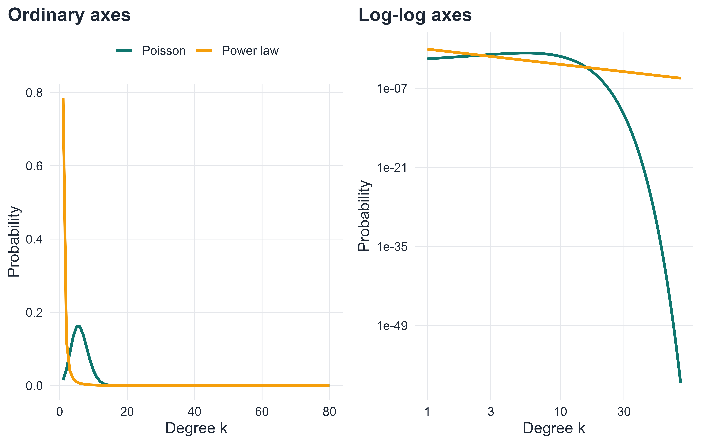
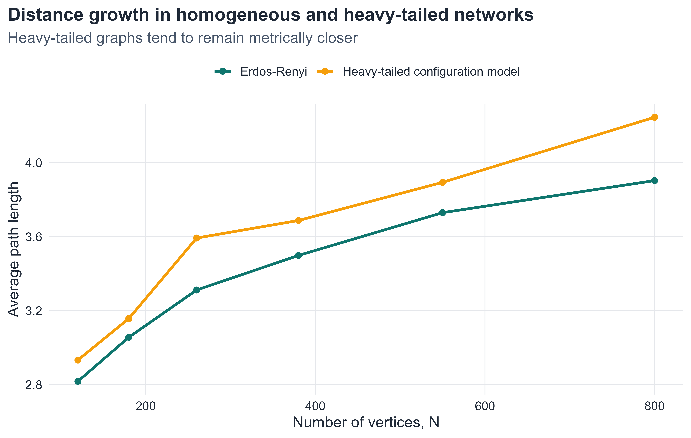
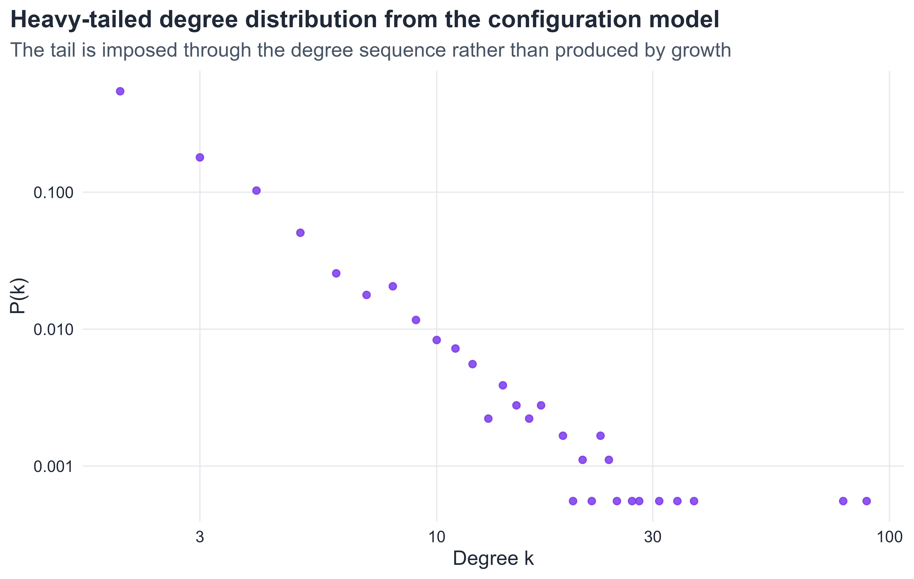
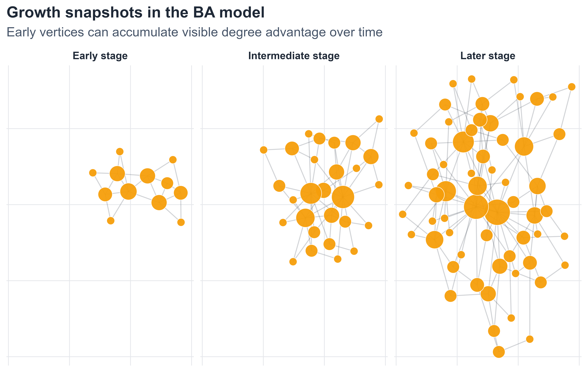
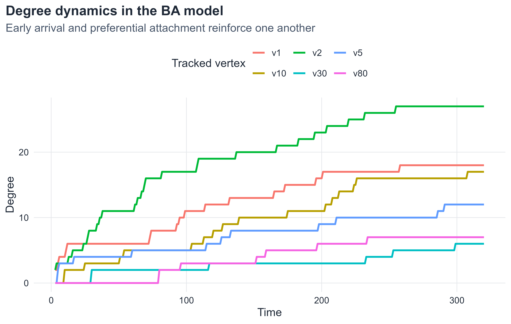
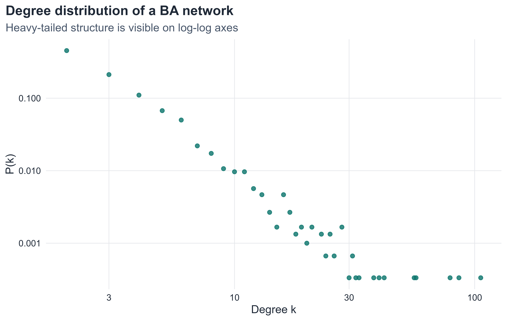
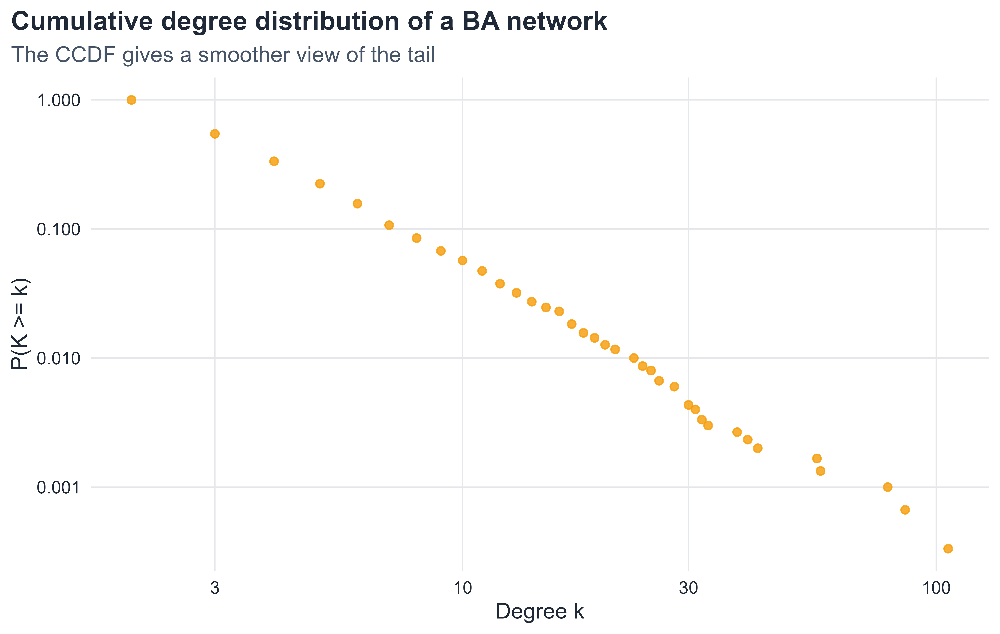
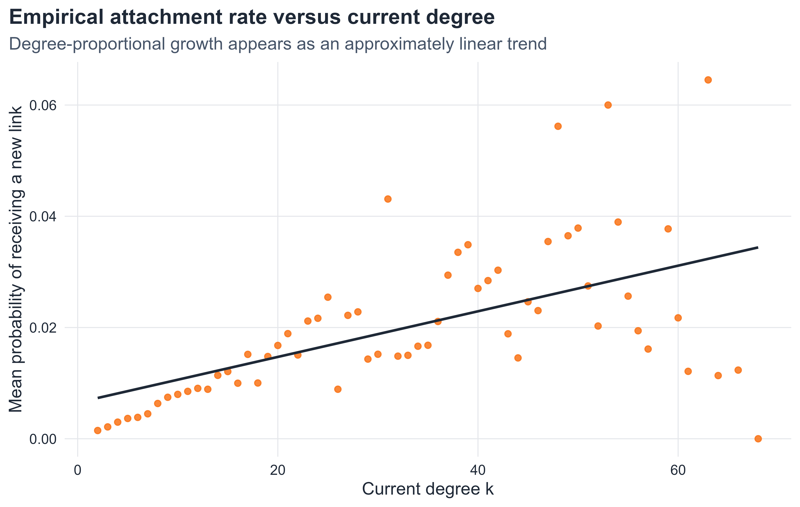
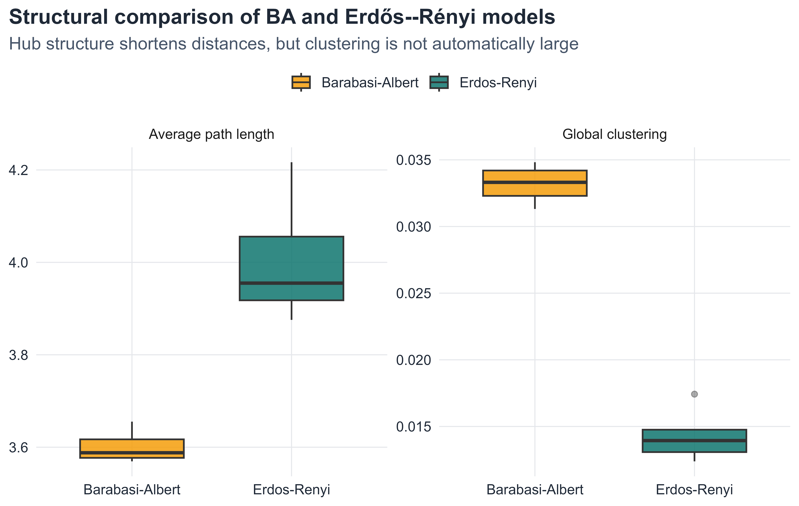

Many real networks are dominated by degree heterogeneity. In citation systems, a small number of papers receive enormous attention while most receive few citations. In transportation systems, a small number of airports serve as major transfer hubs while most airports remain modest in connectivity. In the World Wide Web, some pages attract extraordinarily many links while the overwhelming majority remain comparatively peripheral. (Barabási and Albert 1999; Albert and Barabási 2002; Newman 2010)
This chapter studies the mathematics of that phenomenon. Our goal is not merely to present the Barabási–Albert model, but to distinguish clearly between three different levels of description:
the structural signature of a scale-free network,
the statistical regularities associated with heavy-tailed degree distributions,
the generative mechanisms that can produce such patterns.
The chapter therefore proceeds in two parts. We first study scale-free structure independently of any particular growth model. After that, we introduce growth and preferential attachment, and then present the Barabási–Albert model as one important mechanism that generates heavy-tailed degree distributions.
7.2 Learning goals
By the end of this chapter, it should be possible to:
explain what degree heterogeneity and hub structure mean
define a power-law degree distribution and interpret its exponent
explain why the term scale-free is used
interpret degree distributions on log-log axes
explain the ideas of universality and ultra-small distances in heavy-tailed networks
generate a network with an arbitrary degree distribution using the configuration model
describe growth and preferential attachment conceptually and mathematically
define the Barabási–Albert model
interpret degree dynamics in a growing preferential-attachment network
evaluate the strengths and limitations of the BA model
7.3 Roadmap
The first half of the chapter develops the structural language of scale-free networks: hubs, heavy tails, power laws, universality, and the configuration model. The second half turns to growth-based explanations. There we introduce preferential attachment, the BA model, degree dynamics, and several empirical signatures of that model. This structure parallels the general organization used elsewhere in the book: structural property first, mechanistic model second, and numerical interpretation throughout.
7.4 Hubs, degree heterogeneity, and broad degree distributions
Degree heterogeneity
Definition 7.1 A network exhibits degree heterogeneity when vertices with very different degrees coexist in substantial numbers, so that the degree distribution is broad rather than concentrated around a single typical value.
In a homogeneous graph, most degrees lie in a relatively narrow band around the mean. In a heterogeneous graph, such a summary is inadequate: many vertices have small degree, a moderate number have intermediate degree, and a few may have extremely large degree. This broadness already suggests that the graph cannot be described adequately by average degree alone.
Hubs
Definition 7.2 A hub is a vertex whose degree is substantially larger than the degrees of most other vertices in the same network.
Hubs matter because they can change the geometry and function of the network. They can shorten paths, centralize traffic, accelerate spreading processes, and create vulnerability under targeted removal. For this reason, the existence of hubs is not merely a visual feature; it is a structural fact with dynamical consequences.
Visual contrast: homogeneous and heterogeneous networks
Figure 7.1: A visual comparison between a homogeneous Erdős–Rényi graph and a heterogeneous graph generated by preferential attachment. The two networks have roughly similar average degree, but the second contains a few much larger vertices, reflecting hub formation.
As shown in Figure 7.1, the contrast is qualitative before it is quantitative. In the Erdős–Rényi graph, vertex sizes remain relatively comparable. In the heterogeneous network, a small number of vertices dominate visually. This motivates the need for a more precise statistical description of broad degree structure.
7.5 Power-law tails and the meaning of scale-free structure
Power-law degree distributions
Definition 7.3 A degree distribution follows a power law if, for sufficiently large degree k,
P(k) \sim Ck^{-\gamma},
where C > 0 and \gamma > 0.
The notation \sim means asymptotic proportionality. In other words,
So rescaling the degree changes the tail only by a multiplicative factor. There is no characteristic degree scale governing the tail. This is the basic reason for the term scale-free.
In practice, this definition should be interpreted carefully. Real finite networks rarely exhibit a perfect power law over all degrees. What matters is the approximate tail behavior over a meaningful scaling region (Clauset, Shalizi, and Newman 2009).
Why the tail matters
Heavy tails differ sharply from binomial, Poisson, or exponential tails. In a heavy-tailed degree distribution:
low-degree vertices remain common,
high-degree vertices are rare but not negligible,
extreme degrees occur much more often than in narrow distributions.
This makes the second moment of the degree distribution especially important. When the tail is sufficiently heavy, quantities depending on \langle k^2 \rangle can behave very differently from what one expects in homogeneous random graphs.
7.6 How to read degree distributions on ordinary and log-log scales
For empirical work, it is useful to distinguish three related objects:
the raw degree distribution P(k),
its representation on log-log axes,
the complementary cumulative distribution function, or CCDF, P(K \geq k).
A raw histogram can obscure the tail because high-degree observations are rare. Log-log coordinates often make heavy-tailed behavior easier to inspect, but approximate linearity on log-log axes is only suggestive, not a mathematical proof of a power law. For this reason, cumulative representations are often preferred in practice.
Show code
k_vals <-1:80plot_tbl <-tibble(k =rep(k_vals, 2),prob =c(dpois(k_vals, lambda =6), { p <- k_vals^(-2.7) p /sum(p) }),distribution =rep(c("Poisson", "Power law"), each =length(k_vals)))p1 <-ggplot(plot_tbl, aes(x = k, y = prob, color = distribution)) +geom_line(linewidth =1.1) +scale_color_manual(values =c("Poisson"= course_cols$teal, "Power law"= course_cols$gold)) +labs(title ="Ordinary axes", x ="Degree k", y ="Probability", color =NULL) +theme(legend.position ="top")p2 <-ggplot(plot_tbl, aes(x = k, y = prob, color = distribution)) +geom_line(linewidth =1.1) +scale_color_manual(values =c("Poisson"= course_cols$teal, "Power law"= course_cols$gold)) +scale_x_log10() +scale_y_log10() +labs(title ="Log-log axes", x ="Degree k", y ="Probability", color =NULL) +theme(legend.position ="none")gridExtra::grid.arrange(p1, p2, ncol =2)

Figure 7.2: A comparison between a Poisson distribution and a power-law distribution on ordinary and log-log scales. On ordinary axes, the heavy tail is harder to interpret. On log-log axes, the slower tail decay becomes much clearer.
Figure Figure 7.2 illustrates why log-log plots are so common in this literature. On ordinary axes, the mass near small degrees dominates the picture. On log-log axes, the difference in tail decay becomes much easier to see. At the same time, one should not over-interpret visual linearity. Finite-size noise, truncation, and sampling variability can all distort the tail (Clauset, Shalizi, and Newman 2009).
7.7 Universality and the scale-free viewpoint
One reason scale-free networks attracted so much attention is that broad degree distributions appear in many systems that are otherwise very different: technological, biological, informational, and social networks can all exhibit strong degree heterogeneity. This led to the idea of universality: systems with very different microscopic details may display similar large-scale statistical signatures. (Albert and Barabási 2002; Barabási and Pósfai 2016)
This does not mean that all real networks are power-law networks, nor that all heavy-tailed networks arise from the same mechanism. The point is more subtle. Similar tail behavior can emerge from very different domains, which suggests that some statistical regularities are more fundamental than the details of the underlying application.
For a mathematical treatment, the important lesson is that scale-free structure should be studied first as a structural phenomenon. A generative model such as the BA model is then one explanation of that phenomenon, not the definition of the phenomenon itself.
Scale-free degree heterogeneity can also affect the metric structure of a network. In many classical random graph models, average path length grows on the order of \log N. In sufficiently heavy-tailed networks, especially when 2 < \gamma < 3, the growth can be even slower. This regime is often described as ultra-small, because distances may scale like \log \log N rather than \log N in the large-size limit (Newman, Strogatz, and Watts 2001; Dorogovtsev, Mendes, and Samukhin 2003; Barabási and Pósfai 2016).
The exact asymptotics require care, but the central idea is intuitive: a small number of extremely connected hubs can create shortcuts across the graph. As a result, the network may remain globally close even as it becomes very large.
Show code
sizes <-c(120, 180, 260, 380, 550, 800)er_path_tbl <-simulate_mean_distance_connected(generator =function(n) igraph::sample_gnp(n = n, p =6/ (n -1), directed =FALSE, loops =FALSE),sizes = sizes,reps =6) |>mutate(model ="Erdos-Renyi")sf_path_tbl <-simulate_mean_distance_connected(generator =function(n) make_scale_free_cfg(n = n, gamma =2.5, k_min =2, k_max =70),sizes = sizes,reps =6) |>mutate(model ="Heavy-tailed configuration model")path_tbl <-bind_rows(er_path_tbl, sf_path_tbl)ggplot(path_tbl, aes(x = n, y = mean_distance, color = model)) +geom_line(linewidth =1.1) +geom_point(size =2) +scale_color_manual(values =c("Erdos-Renyi"= course_cols$teal,"Heavy-tailed configuration model"= course_cols$gold)) +labs(title ="Distance growth in homogeneous and heavy-tailed networks",subtitle ="Heavy-tailed graphs tend to remain metrically closer",x ="Number of vertices, N",y ="Average path length",color =NULL )

Figure 7.3: Average path length versus system size for Erdős–Rényi graphs and heavy-tailed configuration-model graphs. The heavy-tailed networks tend to maintain shorter distances, illustrating the qualitative idea behind ultra-small behavior.
As shown in Figure 7.3, the heavy-tailed configuration-model networks tend to maintain shorter paths over the same range of system sizes. This finite simulation does not prove the asymptotic law \log \log N, but it supports the broader structural message: degree heterogeneity can compress distances very strongly.
7.9 Generating arbitrary degree distributions: the configuration model
The scale-free viewpoint is broader than any single growth model. If our objective is simply to construct a graph with a given degree sequence or degree distribution, we can do so without invoking growth or preferential attachment at all (Newman, Strogatz, and Watts 2001; Newman 2010).
Definition 7.5 The configuration model constructs a random graph from a prescribed degree sequence by assigning a number of half-edges to each vertex equal to its degree and then pairing those half-edges at random.
This idea is important conceptually. It shows that a heavy-tailed degree distribution is not the same thing as a growth rule. One can impose the distribution first and randomize the rest of the structure (Newman, Strogatz, and Watts 2001; Molloy and Reed 1995).
Why the configuration model matters
The configuration model is useful because it allows us to separate two questions:
What happens because of the degree distribution itself?
What happens because of the particular mechanism that generated the network?
If two networks share the same degree distribution but differ in clustering, age structure, or community organization, then the differences cannot be attributed to degree sequence alone.
Show code
g_cfg <-make_scale_free_cfg(n =1800, gamma =2.6, k_min =2, k_max =90)cfg_tbl <-emp_degree_table(g_cfg)ggplot(cfg_tbl, aes(x = k, y = prob)) +geom_point(color = course_cols$violet, size =1.8, alpha =0.85) +scale_x_log10() +scale_y_log10() +labs(title ="Heavy-tailed degree distribution from the configuration model",subtitle ="The tail is imposed through the degree sequence rather than produced by growth",x ="Degree k",y ="P(k)" )

Figure 7.4: Empirical degree distribution of a heavy-tailed network generated by the configuration model. The model reproduces a prescribed broad degree sequence without using growth or preferential attachment.
Figure Figure 7.4 makes the main point visible. A broad, approximately power-law degree distribution can be produced without any growth mechanism. This is why the configuration model is such a useful baseline in network science: it isolates the role of degree heterogeneity from other structural ingredients.
7.10 From structural signature to generative mechanism
We have now described scale-free networks as structural objects: they exhibit broad degree distributions, heavy tails, hubs, and often unusually short distances. The next question is different in character:
What dynamic mechanism can generate such structure?
One influential answer is based on two ideas:
networks grow over time,
new vertices do not attach uniformly, but prefer already well-connected vertices.
This is the logic of growth plus preferential attachment.
7.11 Growth and preferential attachment
Conceptual idea
Preferential attachment is a cumulative-advantage mechanism. If a vertex has already accumulated many links, it becomes more likely to receive additional links in the future. This creates positive feedback: large degree tends to become even larger.
In social and informational systems, this idea is often plausible. Popular pages attract more links. Well-cited papers attract more citations. Highly connected airports attract more routes. The phrase “the rich get richer” is informal, but it captures the intuition well.
Mathematical form
Definition 7.6 A growing network evolves by preferential attachment if the probability that a new vertex connects to an existing vertex i is proportional to the current degree of i.
If vertex i has degree k_i(t) at time t, then the attachment probability is
\Pi_i(t) = \frac{k_i(t)}{\sum_j k_j(t)}.
Since \sum_j k_j(t) = 2L(t), this can also be written as
\Pi_i(t) = \frac{k_i(t)}{2L(t)}.
NoteInterpretation
Preferential attachment does not say that only large-degree vertices receive new links. It says that they receive them with higher probability. The mechanism is probabilistic, not deterministic.
7.12 The Barabási–Albert model
Definition 7.7 The Barabási–Albert (BA) model is defined by the following rule:
begin with a connected seed graph,
at each time step add one new vertex,
connect the new vertex to m existing vertices,
choose each target with probability proportional to degree.
The BA model therefore combines growth with preferential attachment. Neither ingredient alone is enough to produce the characteristic degree dynamics of the model.
Average degree
At each time step, one new vertex and m new edges are added. Therefore, for large system size,
\langle k \rangle \approx 2m.
So the parameter m controls density, while the preferential-attachment rule controls the heavy-tailed structure.
7.13 Simulating BA growth
Show code
layout_tbl <-function(g, stage_name) { lay <- igraph::layout_with_fr(g) nodes <-tibble(id =seq_len(vcount(g)),x = lay[, 1],y = lay[, 2],degree = igraph::degree(g),stage = stage_name ) edges <- igraph::as_data_frame(g, what ="edges") |>left_join(nodes |>select(from = id, x, y), by ="from") |>rename(x_from = x, y_from = y) |>left_join(nodes |>select(to = id, x, y), by ="to") |>rename(x_to = x, y_to = y) |>mutate(stage = stage_name)list(nodes = nodes, edges = edges)}g1 <- igraph::sample_pa(n =12, power =1, m =2, directed =FALSE)g2 <- igraph::sample_pa(n =28, power =1, m =2, directed =FALSE)g3 <- igraph::sample_pa(n =60, power =1, m =2, directed =FALSE)p1 <-layout_tbl(g1, "Early stage")p2 <-layout_tbl(g2, "Intermediate stage")p3 <-layout_tbl(g3, "Later stage")nodes_tbl <-bind_rows(p1$nodes, p2$nodes, p3$nodes)edges_tbl <-bind_rows(p1$edges, p2$edges, p3$edges)ggplot() +geom_segment(data = edges_tbl,aes(x = x_from, y = y_from, xend = x_to, yend = y_to),color =alpha(course_cols$ink, 0.20), linewidth =0.45 ) +geom_point(data = nodes_tbl,aes(x = x, y = y, size = degree),fill = course_cols$gold, color ="white", shape =21, stroke =0.35, alpha =0.95 ) +scale_size_continuous(range =c(3.5, 12), guide ="none") +facet_wrap(~stage, nrow =1) +labs(title ="Growth snapshots in the BA model",subtitle ="Early vertices can accumulate visible degree advantage over time",x =NULL, y =NULL ) +theme(axis.text =element_blank(),axis.title =element_blank(),axis.ticks =element_blank(),panel.grid =element_blank(),strip.text =element_text(face ="bold", color = course_cols$ink) )

Figure 7.5: Snapshots of a Barabási–Albert network at three stages of growth. Older vertices with early degree advantage can accumulate disproportionately many links as the network expands.
As shown in Figure 7.5, the BA model is intrinsically time-asymmetric. Vertices that enter early have more opportunities to accumulate links, and preferential attachment can amplify that early advantage. The emergence of hubs is therefore tied both to present degree and to time of arrival.
7.14 Degree dynamics in a growing network
Show code
track_ba_degree_dynamics <-function(n =300, m =2, tracked =c(1, 2, 5, 10, 30, 80)) { tracked <-sort(unique(tracked)) tracked <- tracked[tracked <= n] deg <-rep(0, n) adj <-matrix(0, nrow = n, ncol = n) active <-seq_len(m +1)for (i in active) {for (j in active) {if (i < j) { adj[i, j] <-1 adj[j, i] <-1 } } } deg[active] <-rowSums(adj[active, active, drop =FALSE]) record_step <-function(t) {tibble(time = t, vertex = tracked, degree = deg[tracked]) } out <-list(record_step(m +1))for (t in (m +2):n) { probs <- deg[1:(t -1)] /sum(deg[1:(t -1)]) targets <-sample(1:(t -1), size = m, replace =FALSE, prob = probs) adj[t, targets] <-1 adj[targets, t] <-1 deg[targets] <- deg[targets] +1 deg[t] <- m out[[length(out) +1]] <-record_step(t) }bind_rows(out)}
One of the most instructive ways to understand preferential attachment is to follow a few vertices through time. Early vertices often accumulate degree much faster than later ones, because they have both temporal advantage and higher exposure to subsequent attachment events.
Show code
dyn_tbl <-track_ba_degree_dynamics(n =320,m =2,tracked =c(1, 2, 5, 10, 30, 80)) |>mutate(vertex =paste0("v", vertex))ggplot(dyn_tbl, aes(x = time, y = degree, color = vertex)) +geom_line(linewidth =1.0) +labs(title ="Degree dynamics in the BA model",subtitle ="Early arrival and preferential attachment reinforce one another",x ="Time",y ="Degree",color ="Tracked vertex" )

Figure 7.6: Degree trajectories for several vertices in a growing BA network. Earlier vertices tend to accumulate degree for longer and often remain ahead of later vertices.
Figure Figure 7.6 highlights a central message: preferential attachment is not just a statement about the final degree distribution. It is a dynamic rule that shapes the entire history of the network. The trajectories also show that stochasticity remains important. Early arrival creates opportunity, but not every early vertex becomes a dominant hub.
So the BA model produces a scale-free network with exponent
\gamma = 3.
This is one of the reasons the model became so influential: a very simple growth rule produces hub-dominated degree structure automatically.
A note on finite-size effects
In finite simulations, one should not expect a perfect straight line on a log-log plot. The extreme tail is sparse, noisy, and often truncated. This is why cumulative plots are also useful.
Show code
set.seed(2040)n_ba <-3000m_ba <-2g_ba_large <- igraph::sample_pa(n = n_ba, power =1, m = m_ba, directed =FALSE)deg_tbl <-emp_degree_table(g_ba_large)cum_tbl <-emp_ccdf_table(g_ba_large)
Show code
ggplot(deg_tbl, aes(x = k, y = prob)) +geom_point(color = course_cols$teal, size =1.9, alpha =0.82) +scale_x_log10() +scale_y_log10() +labs(title ="Degree distribution of a BA network",subtitle ="Heavy-tailed structure is visible on log-log axes",x ="Degree k",y ="P(k)" )

Figure 7.7: Empirical degree distribution of a Barabási–Albert network on log-log axes. The broad tail is clear, although the far tail is noisy because of finite-size effects.
Show code
ggplot(cum_tbl, aes(x = k, y = ccdf)) +geom_point(color = course_cols$gold, size =1.9, alpha =0.82) +scale_x_log10() +scale_y_log10() +labs(title ="Cumulative degree distribution of a BA network",subtitle ="The CCDF gives a smoother view of the tail",x ="Degree k",y ="P(K >= k)" )

Figure 7.8: Empirical complementary cumulative degree distribution of a Barabási–Albert network on log-log axes. The cumulative representation smooths the tail and often gives a more stable visual summary.
Taken together, Figure 7.7 and Figure 7.8 show the same structural message in two complementary ways. The raw distribution emphasizes the broadness of the tail, while the CCDF gives a cleaner view of the decay at large degree. In a textbook setting, it is useful for students to see both because empirical work often moves back and forth between them.
7.16 Measuring preferential attachment in simulation
Show code
estimate_attachment_kernel_ba <-function(n =1200, m =2) { deg <-rep(0, n) adj <-matrix(0, nrow = n, ncol = n) active <-seq_len(m +1)for (i in active) {for (j in active) {if (i < j) { adj[i, j] <-1 adj[j, i] <-1 } } } deg[active] <-rowSums(adj[active, active, drop =FALSE]) records <-list()for (t in (m +2):n) { existing_deg <- deg[1:(t -1)] probs <- existing_deg /sum(existing_deg) targets <-sample(1:(t -1), size = m, replace =FALSE, prob = probs) hit <-integer(t -1) hit[targets] <-1L records[[length(records) +1]] <-tibble(k = existing_deg, received = hit) adj[t, targets] <-1 adj[targets, t] <-1 deg[targets] <- deg[targets] +1 deg[t] <- m }bind_rows(records) |>group_by(k) |>summarise(mean_new_links =mean(received), count =n(), .groups ="drop") |>filter(count >=30)}
If the BA mechanism is truly degree-proportional, then vertices of degree k should receive new links at a rate that grows approximately linearly with k. This can be checked empirically from a simulation.
Show code
attach_tbl <-estimate_attachment_kernel_ba(n =1400, m =2)ggplot(attach_tbl, aes(x = k, y = mean_new_links)) +geom_point(color = course_cols$coral, size =1.8, alpha =0.85) +geom_smooth(method ="lm", se =FALSE, color = course_cols$ink, linewidth =0.9) +labs(title ="Empirical attachment rate versus current degree",subtitle ="Degree-proportional growth appears as an approximately linear trend",x ="Current degree k",y ="Mean probability of receiving a new link" )

Figure 7.9: Estimated attachment kernel in a BA simulation. The mean rate of receiving new links grows approximately linearly with current degree, consistent with preferential attachment.
As shown in Figure 7.9, the simulated attachment rate increases roughly linearly with current degree. This does not replace the formal definition of the model, but it gives an empirical confirmation of what the mechanism means in practice (Barabási and Albert 1999; Barabási and Pósfai 2016).
7.17 Beyond degree distribution: clustering and distances in the BA model
Show code
compare_stats <-function(n, m, reps =10) {map_dfr(seq_len(reps), function(r) { g_ba <- igraph::sample_pa(n = n, m = m, power =1, directed =FALSE) p_er <- (2* m) / (n -1)repeat { g_er <- igraph::sample_gnp(n = n, p = p_er, directed =FALSE, loops =FALSE)if (igraph::components(g_er)$no ==1) break }tibble(model =c("Barabasi-Albert", "Erdos-Renyi"),mean_distance =c( igraph::mean_distance(g_ba, directed =FALSE), igraph::mean_distance(g_er, directed =FALSE) ),transitivity =c( igraph::transitivity(g_ba, type ="global"), igraph::transitivity(g_er, type ="global") ) ) })}
A degree distribution is not the whole story of a network. Two models may differ not only in their tails, but also in their path length, clustering, and other global properties. It is therefore useful to compare the BA model with an Erdős–Rényi graph of similar average degree.
Show code
compare_stats <-function(n, m, reps =10) {map_dfr(seq_len(reps), function(r) { g_ba <- igraph::sample_pa(n = n, m = m, power =1, directed =FALSE) p_er <- (2* m) / (n -1)repeat { g_er <- igraph::sample_gnp(n = n, p = p_er, directed =FALSE, loops =FALSE)if (igraph::components(g_er)$no ==1) break }tibble(model =c("Barabasi-Albert", "Erdos-Renyi"),mean_distance =c( igraph::mean_distance(g_ba, directed =FALSE), igraph::mean_distance(g_er, directed =FALSE) ),transitivity =c( igraph::transitivity(g_ba, type ="global"), igraph::transitivity(g_er, type ="global") ) ) })}stats_tbl <-compare_stats(n =250, m =2, reps =5) |>pivot_longer(cols =c(mean_distance, transitivity),names_to ="metric", values_to ="value") |>mutate(metric =recode(metric,mean_distance ="Average path length",transitivity ="Global clustering"))ggplot(stats_tbl, aes(x = model, y = value, fill = model)) +geom_boxplot(alpha =0.85, width =0.65, outlier.alpha =0.4) +facet_wrap(~ metric, scales ="free_y") +scale_fill_manual(values =c("Barabasi-Albert"= course_cols$gold,"Erdos-Renyi"= course_cols$teal)) +labs(title ="Structural comparison of BA and Erdős--Rényi models",subtitle ="Hub structure shortens distances, but clustering is not automatically large",x =NULL,y =NULL,fill =NULL )

Figure 7.10: A comparison of average path length and transitivity for BA and Erdős–Rényi graphs with approximately matched average degree. The BA model tends to produce shorter paths because of hubs, while clustering is not automatically high.
Figure Figure 7.10 shows why one should not reduce the BA model to its power-law tail alone. The model typically creates shorter paths than a matched Erdős–Rényi graph because hubs provide shortcuts. At the same time, its clustering is not necessarily large enough to match many empirical networks. This is one reason later models introduced additional mechanisms beyond simple preferential attachment (Albert and Barabási 2002; Barabási and Pósfai 2016).
7.18 What the BA model explains and what it does not
The BA model is historically important because it demonstrates that a very simple mechanism can generate heavy-tailed degree distributions and hub formation. It explains, in a mathematically transparent way, how growth plus cumulative advantage can lead to scale-free structure (Barabási and Albert 1999; Albert and Barabási 2002; Barabási and Pósfai 2016).
However, the model also has clear limitations:
the exponent is quite specific, with asymptotic value \gamma = 3,
clustering is often lower than in many real systems,
communities, geometry, and hidden attributes are absent,
not every heavy-tailed network is generated by pure preferential attachment.
So the BA model should be viewed as a foundational mechanism, not as a complete description of all scale-free networks.
7.19 Core formulas to remember
ImportantSummary
For scale-free structure and the BA model, the most important formulas in this chapter are:
Average degree in the BA model:\langle k \rangle \approx 2m
BA tail exponent:P(k) \sim Ck^{-3}
7.20 In-class questions
Why is a heavy-tailed degree distribution different from a narrow degree distribution even when the mean degree is the same?
Why does approximate linearity on a log-log plot not by itself prove a power law?
What is gained conceptually by studying scale-free structure before introducing the BA model?
Why does the configuration model help separate degree-sequence effects from growth effects?
Why do early vertices often have an advantage in the BA model?
In what sense is the BA model explanatory, and in what sense is it incomplete?
7.21 End-of-chapter exercises
The exercises below are divided into four groups:
conceptual and structural exercises,
mathematical exercises,
model-based analytical exercises,
simulation and coding exercises.
Part I. Conceptual and structural exercises
Exercise 1. Hubs and heterogeneity
Explain why average degree is not enough to describe a network with strong degree heterogeneity. In your answer, discuss the role of hubs and the limitations of using only a “typical” degree.
Exercise 2. What “scale-free” means
Assume that P(k) \sim Ck^{-\gamma}.
Show that P(ak) \sim a^{-\gamma}P(k) for every fixed a > 0.
Explain why this motivates the term scale-free.
Discuss why finite real networks should not be expected to follow a perfect power law at all degrees.
Exercise 3. Universality
Write a short analytical note explaining what is meant by universality in the context of scale-free networks. Why does the appearance of heavy tails in many different systems attract theoretical interest?
Exercise 4. Ultra-small distances
Explain why a network with strong degree heterogeneity may have shorter typical path length than a homogeneous random graph with comparable average degree. What is the qualitative meaning of the phrase ultra-small?
Part II. Mathematical exercises
Exercise 5. Cumulative power-law tail
Assume that
P(k) \sim Ck^{-\gamma}
with \gamma > 1.
Show heuristically that
P(K \geq k) \sim C'k^{-(\gamma - 1)}.
Explain why the CCDF is often easier to interpret numerically than the raw degree distribution.
Exercise 6. Preferential-attachment probability
Suppose vertex i has degree k_i(t) at time t.
Explain why the preferential-attachment rule has the form \Pi_i(t) = \frac{k_i(t)}{\sum_j k_j(t)}.
Show that \sum_i \Pi_i(t) = 1.
Give a probabilistic interpretation of this normalization.
Exercise 7. Average degree in the BA model
In the BA model, one new vertex and m new edges are added at each time step.
Show that for large network size, the number of edges grows approximately linearly in N.
Deduce that \langle k \rangle \approx 2m.
Explain why m controls density but not the tail exponent.
Part III. Model-based analytical exercises
Exercise 8. Configuration model versus BA model
Write a careful comparison between the configuration model and the BA model. Your answer should address:
what each model keeps fixed,
whether the model is static or growing,
whether the heavy tail is imposed or generated,
what structural information is not captured by degree sequence alone.
Exercise 9. Early vertices and cumulative advantage
Use the idea of degree trajectories to explain why early vertices often maintain an advantage in the BA model. Does early arrival guarantee that a vertex becomes a hub? Explain carefully.
Exercise 10. Limits of the BA model
Discuss at least three limitations of the BA model as a model of real networks. Why is it useful despite those limitations?
Part IV. Simulation and coding exercises
Exercise 11. Ordinary versus log-log plots
Generate a heavy-tailed degree sequence and compare its empirical distribution on ordinary axes and on log-log axes. Explain which aspects of the tail become visible only after rescaling the axes.
Exercise 12. Configuration-model experiment
Generate a power-law-like degree sequence and use the configuration model to build a graph.
Plot its degree distribution on log-log axes.
Compute its average degree and maximum degree.
Compare the result with an Erdős–Rényi graph of similar mean degree.
Exercise 13. BA growth snapshots
Write a short R script that generates snapshots of a BA network at several sizes. Use the figure to explain how hubs emerge over time.
Exercise 14. Degree dynamics
Simulate the BA model while tracking the degree of several vertices introduced at different times.
Plot degree versus time.
Compare early and late vertices.
Discuss how the figure illustrates cumulative advantage.
Exercise 15. Measuring preferential attachment
In a BA simulation, record the current degree of a vertex and whether it receives a new link at the next step.
Estimate the empirical attachment rate as a function of current degree.
Plot the result.
Explain why approximate linearity supports the preferential-attachment hypothesis.
Exercise 16. BA versus Erdős–Rényi properties
Generate BA and Erdős–Rényi networks with approximately the same average degree and compare:
average path length,
clustering,
maximum degree,
the visual appearance of the network.
Write a short discussion explaining which differences arise mainly because of hub structure.
Suggested mini-project
A strong mini-project for this chapter is the following:
Compare three ways of thinking about heavy-tailed degree structure: descriptive power-law analysis, the configuration model, and the Barabási–Albert growth model.
A complete submission should contain:
precise mathematical definitions,
at least three figures,
one configuration-model simulation,
one BA growth simulation,
one comparison with a homogeneous random graph,
a concluding discussion separating structural signature from generative mechanism.
7.22 References
Albert, Réka, and Albert-László Barabási. 2002. “Statistical Mechanics of Complex Networks.”Reviews of Modern Physics 74 (1): 47–97. https://doi.org/10.1103/RevModPhys.74.47.
Barabási, Albert-László, and Márton Pósfai. 2016. Network Science. Cambridge University Press.
Bollobás, Béla, Oliver Riordan, Joel Spencer, and Gábor Tusnády. 2001. “The Degree Sequence of a Scale-Free Random Graph Process.”Random Structures & Algorithms 18 (3): 279–90. https://doi.org/10.1002/rsa.1009.
Clauset, Aaron, Cosma Rohilla Shalizi, and M. E. J. Newman. 2009. “Power-Law Distributions in Empirical Data.”SIAM Review 51 (4): 661–703. https://doi.org/10.1137/070710111.
Dorogovtsev, S. N., J. F. F. Mendes, and A. N. Samukhin. 2003. “Metric Structure of Random Networks.”Nuclear Physics B 653 (3): 307–38. https://doi.org/10.1016/S0550-3213(03)00095-2.
Molloy, Michael, and Bruce Reed. 1995. “A Critical Point for Random Graphs with a Given Degree Sequence.”Random Structures & Algorithms 6 (2-3): 161–80. https://doi.org/10.1002/rsa.3240060204.
Newman, M. E. J. 2010. Networks: An Introduction. Oxford University Press.
Newman, M. E. J., Steven H. Strogatz, and Duncan J. Watts. 2001. “Random Graphs with Arbitrary Degree Distributions and Their Applications.”Physical Review E 64 (2): 026118. https://doi.org/10.1103/PhysRevE.64.026118.